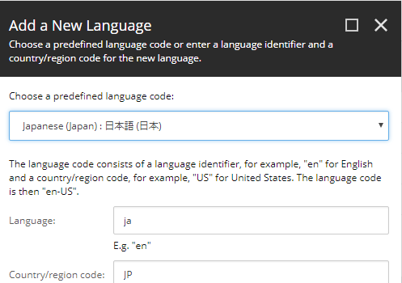
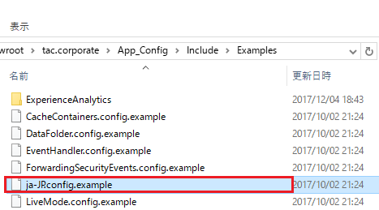
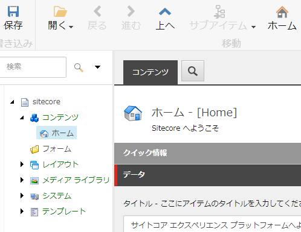

日本語化の設定¶
Sitecoreの編集環境とデフォルトのライブサイトのデフォルトの言語を日本語にする方法を記載します。
手順としては次の通り
日本語の言語アイテムの追加¶
Sitecoreの編集環境にログインしてコントロールパネルの LOCALIZATION > Add a new language を選択します。 ここで日本語を選択して追加します。

日本語をデフォルトにするインクルードファイルを配置¶
次の言語をデフォルトで日本語にします。
- Sitecore クライアントインタフェース
- 編集するコンテンツの言語
- デフォルトのライブサイトの言語
Sitecore がインストールされたフォルダーの App_Config\Include\Examples をエクスプローラーで開きます。 例えば、 C:\inetpub\wwwroot\tac.corporate\App_Config\Include\Examples となります。
フォルダーの、ja-JP.config.example を ja-JP.config にリネームします。

ファイルを開くと、shell のサイト(コンテンツエディターなどの編集環境でのデフォルトの編集言語)やライブサイト(website)のデフォルトの言語バージョン、ClientLanguage(編集ツール自身のデフォルトの言語)が ja-jp となるようにパッチが構成されていることがわかります。
これで、ライブサイトや、編集環境のUIおよび編集用のコンテンツの言語がデフォルトで日本語になります。
